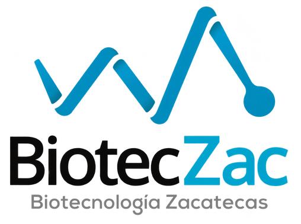
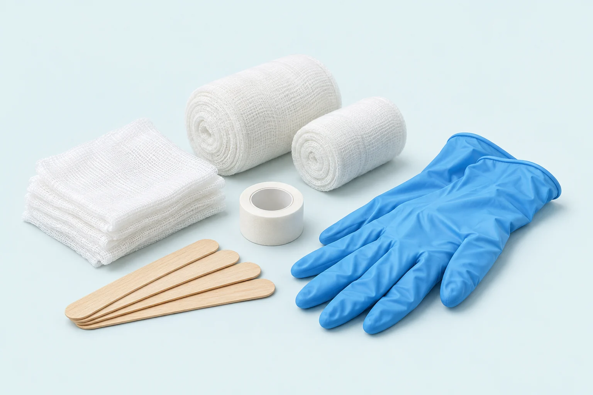
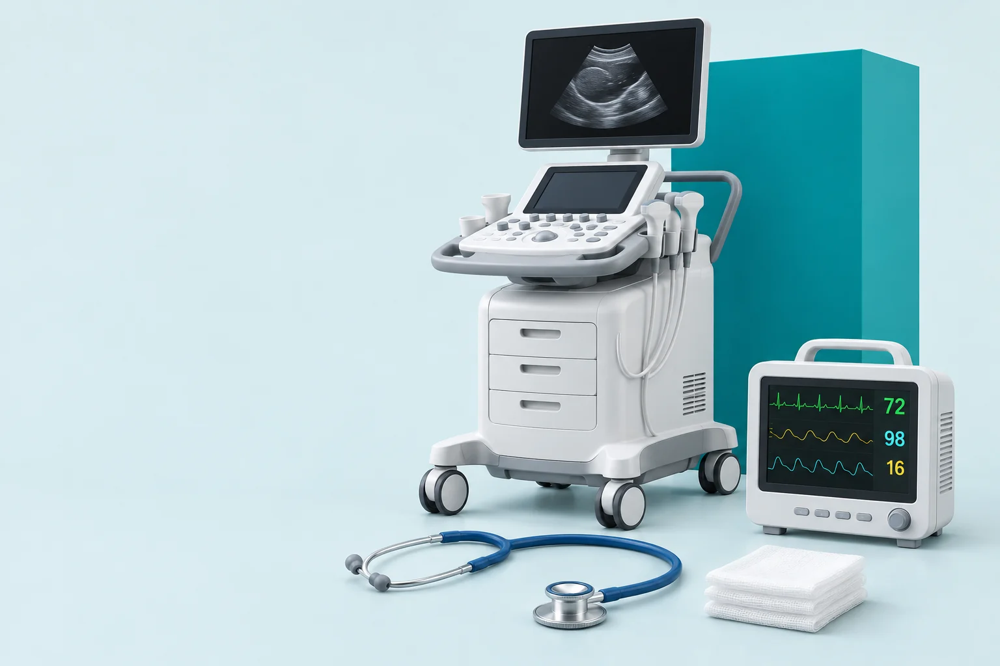
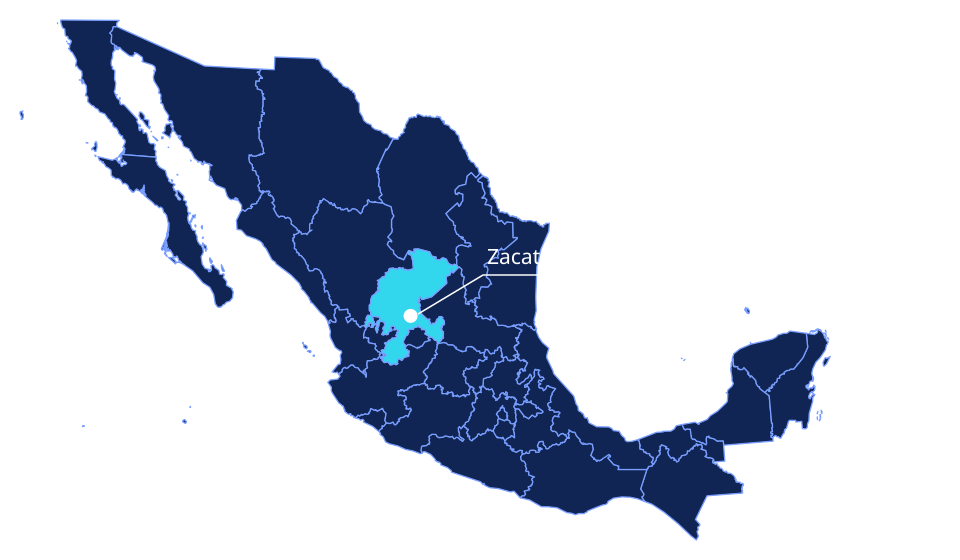

Compra.
Integra insumos, instrumental y equipo a tu operación. Comparte tu lista, las cantidades y las características que buscas.
Quiero comprar
Zacatecas, México
Servicio nacional
Insumos para la salud.
Venta y renta de equipo médico.

Desde Zacatecas,
para todo México.
El material de todos los días y el equipo para dar el siguiente paso. Encuentra tu área y cuéntanos qué necesitas.
Materiales para la atención, la exploración y el cuidado de pacientes en cada jornada.

Opciones para equipar espacios de atención y acompañar el trabajo de los profesionales de la salud.

Equipamiento y materiales para organizar espacios de trabajo en laboratorios, consultorios y hospitales.

¿Buscas algo más? Nuestra oferta es amplia. Consulta con nosotros el producto que necesitas.
Catálogo en construcciónComprar o rentar depende de lo que necesitas. Te ayudamos a consultar las opciones para tu institución.
Las opciones, los plazos y la disponibilidad se confirman en tu cotización.
Atendemos solicitudes de hospitales, clínicas, consultorios, laboratorios e instituciones de salud de todo el país.

Comparte tu ciudad y las necesidades de tu proyecto.
Revisamos contigo las condiciones de atención y entrega.
Somos Servicios y Equipos en Biotecnología de Zacatecas. Puedes llamarnos BiotecZac.
Nos dedicamos a la venta de insumos para la salud y a la venta y renta de equipos médicos. Trabajamos desde Zacatecas para atender a instituciones en todo México.
Una lista de materiales, un equipo en particular o un espacio por equipar: cuéntanos en qué estás trabajando y buscamos opciones contigo.
Te ayudamos a dar el siguiente paso. Escríbenos directamente o prepara tu consulta con este formulario.